Os personagens marcados como "Universo Legends" vêm das histórias antigas que deixaram de ser oficiais em 2014, no caso quando a Disney comprou a LucasFilm.
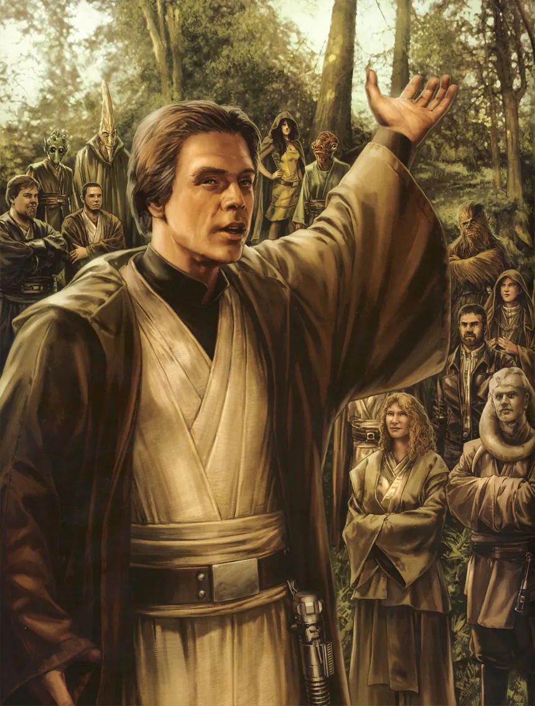
Luke Skywalker
Luke nasceu em Tatooine e cresceu numa fazenda com os tios, Owen e Beru, sem saber que era filho de Anakin Skywalker. Tudo mudou quando ele encontrou os droides R2-D2 e C-3PO e conheceu Obi-Wan Kenobi, que lhe falou sobre a Força. Virou piloto rebelde, destruiu a primeira Estrela da Morte e depois foi treinado por Yoda para se tornar um Jedi. No fim, ele enfrentou Darth Vader e acreditou que ainda havia bondade nele.
Leia Organa
Leia é filha biológica de Anakin Skywalker e Padmé Amidala, irmã gêmea de Luke, foi criada como princesa de Alderaan por Bail e Breha Organa. Muito jovem, tornou-se senadora e passou a ajudar a Aliança Rebelde em segredo. Foi presa por Darth Vader com os planos da Estrela da Morte e viu Alderaan ser destruído diante dela.
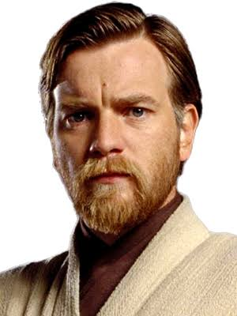
Obi-Wan Kenobi
Treinado por Qui-Gon Jinn, ele se tornou um herói das Guerras Clônicas e mentor de Anakin Skywalker. Contudo, a queda de Anakin para o lado sombrio e a ascensão do Império Galáctico forçaram Obi-Wan ao exílio no planeta desértico de Tatooine, sob o nome de Ben Kenobi.
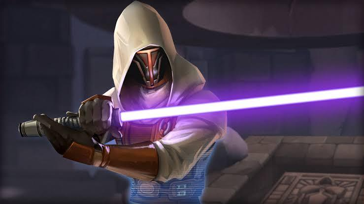
Revan
Revan foi um brilhante Cavaleiro Jedi da Velha República que salvou a galáxia dos Mandalorianos, mas acabou corrompido pelo lado sombrio e se tornou um temido Lorde Sith. Após ser traído por seu aprendiz, teve a mente apagada pelos Jedi, lutou novamente pelo lado luminoso e derrotou seu antigo império, tornando-se uma lenda por dominar os dois lados da Força.
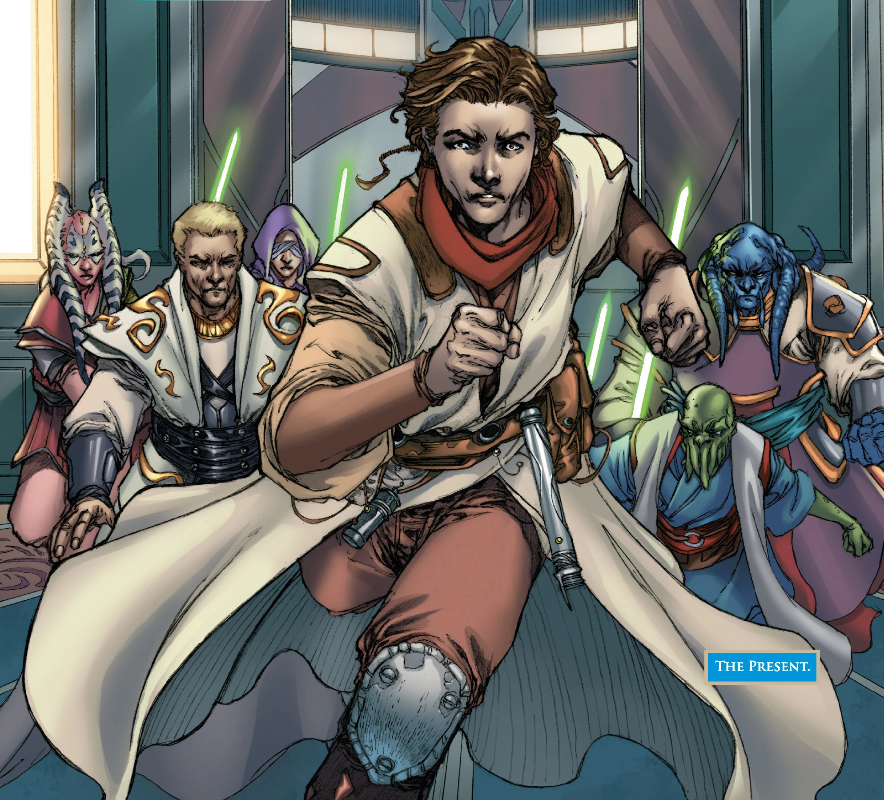
Zayne Carrick
Zayne Carrick foi um Padawan considerado fraco na Força durante as Guerras Mandalorianas, cuja vida mudou após sobreviver a um massacre cometido por seus próprios mestres Jedi em Taris. Injustamente acusado pelos assassinatos, ele fugiu pela galáxia ao lado de aliados improváveis para provar sua inocência e desmascarar uma conspiração secreta dentro da Ordem Jedi
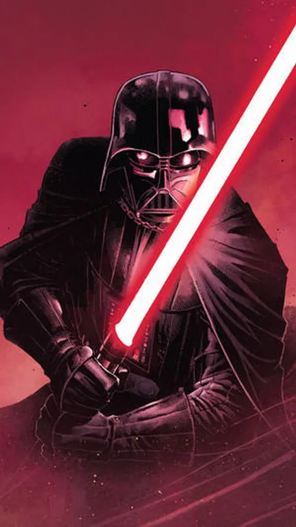
Darth Vader
Antes de ser Vader, ele era Anakin Skywalker, um menino escravizado em Tatooine que virou um dos maiores Jedi da República. Anakin caiu para o lado sombrio por medo de perder a mulher que amava e foi manipulado por Palpatine. Depois do duelo em Mustafar, passou a depender de uma armadura para respirar e viver.
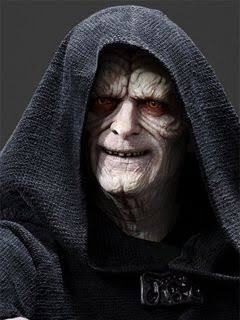
Darth Sidious
Darth Sidious, nascido Sheev Palpatine, foi o mais manipulador Lorde Sith, usando sua fachada de político respeitado para orquestrar a destruição da República e dos Jedi por dentro. Ao incitar as Guerras Clônicas e converter Anakin Skywalker em Darth Vader, ele fundou o Império Galáctico e governou a galáxia com punho de ferro até ser derrubado pela redenção de Vader e pela Aliança Rebelde.
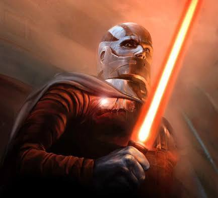
Darth Malak
Darth Malak (originalmente Alek) foi um Cavaleiro Jedi e o melhor amigo de Revan que acabou seduzido pelo lado sombrio após as Guerras Mandalorianas, tornando-se seu aprendiz Sith. Ambicioso e implacável, ele traiu Revan para assumir o trono do Império Sith e aterrorizou a galáxia usando a antiga estação espacial Star Forge, até ser derrotado por seu antigo mestre redimido.
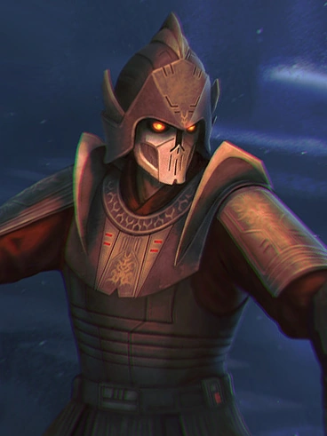
Darth Bane
Darth Bane (nascido Dessel) foi um ex-minerador que se tornou um dos mais influentes Lordes Sith da história ao perceber que a ganância interna estava destruindo o lado sombrio. Após orquestrar a aniquilação da própria Irmandade da Escuridão para eliminar os Sith que considerava fracos, ele estabeleceu a lendária "Regra de Dois", determinando que existiriam apenas um mestre e um aprendiz por vez, garantindo a sobrevivência e a futura vingança dos Sith nas sombras.
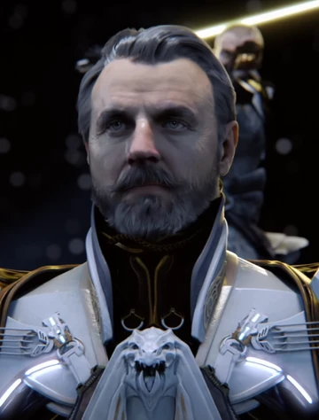
Darth Vitiate
Darth Vitiate (também conhecido como Tenebrae e Valkorion) foi o imortal Imperador Sith da Velha República e uma das entidades mais poderosas e devoradoras do lado sombrio. Após consumir toda a vida de seu planeta natal em um ritual sombrio para alcançar a imortalidade, ele reconstruiu o Império Sith nas sombras por mais de um milênio e manipulou tanto os Mandalorianos quanto Revan para mergulhar a galáxia em guerra, buscando devorar toda a vida existente até ser finalmente destruído por uma aliança liderada pelo Forasteiro.
Boba Fett
Boba Fett é um caçador de recompensas que usa armadura mandaloriana. Ele foi criado por Jango Fett, de quem era um clone, em Kamino. Foi contratado por Darth Vader para encontrar Han Solo e entregou o preso congelado a Jabba, o Hutt.
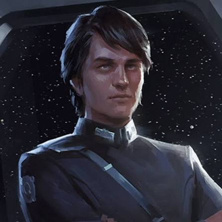
Eli Vanto
Eli Vanto foi um oficial da Marinha Imperial vindo do Espaço Selvagem que se tornou o tradutor, braço direito e principal protegido do Grão-Almirante Thrawn. Apesar de sofrer preconceito da elite imperial por sua origem periférica, destacou-se por sua mente analítica e habilidade com idiomas, chegando a descobrir o projeto secreto da Estrela da Morte antes de ser enviado pelo próprio Thrawn às Regiões Desconhecidas para servir como aliado junto à Ascendência Chiss
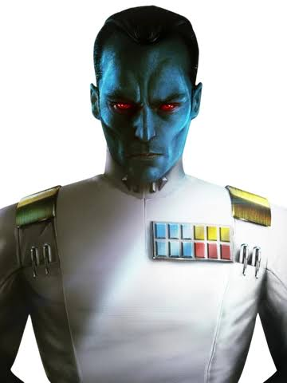
Grão-Almirante Thrawn
Grão-Almirante Thrawn (nascido Mitth'raw'nuruodo) é um brilhante estrategista militar da espécie Chiss e um dos maiores aliados do Império. Enviado da Ascendência Chiss para o Império Galáctico, ele subiu na hierarquia graças à sua inteligência fria e ao método único de estudar a arte, a cultura e a psicologia de seus inimigos para prever cada movimento. Após desaparecer nas Regiões Desconhecidas durante a luta contra os rebeldes de Lothal, retornou anos depois como o grande "herdeiro do Império" para ameaçar a Nova República.
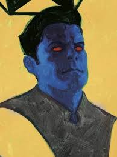
Sindico Thrass
Mitth'ras'safis (conhecido pelo nome central Thrass) foi um Síndico e diplomata Chiss da poderosa família Mitth, além de irmão adotivo e grande amigo de Thrawn. Enquanto Thrawn brilhava nos campos de batalha, Thrass era o mestre na arena política, usando seu carisma, astúcia e habilidade para ler pessoas a fim de navegar pelas intrigas da Ascendência Chiss e proteger seu irmão das consequências de suas ações ousadas. Leal até o fim, ele acabou morrendo tragicamente durante uma operação contra os piratas Vagaari ao se sacrificar para salvar sobreviventes.
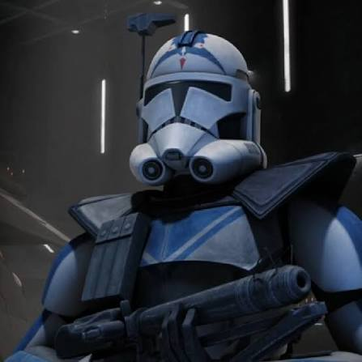
Fives (CT-5555)
Fives (CT-5555) foi um leal soldado clone da 501ª Legião que ascendeu ao posto de ARC Trooper durante as Guerras Clônicas ao lado de seu irmão Echo. Ele ficou marcado na história por descobrir a existência dos chips inibidores secretos implantados nos clones e desvendar a conspiração da Ordem 66 antes de qualquer Jedi, mas acabou sendo silenciado e morto pelas forças do Chanceler Palpatine antes que pudesse convencer Anakin Skywalker e a República da verdade.
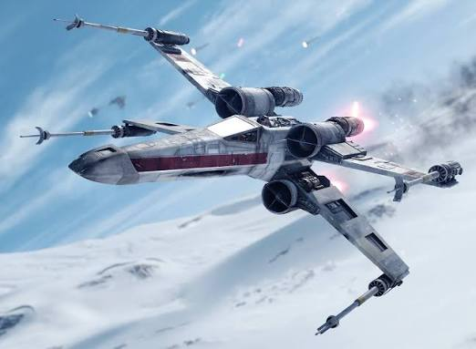
X-wing
Caça estelar de asas em formato de X, rápido e resistente. Foi a nave principal da Aliança e usada por Luke Skywalker para destruir a primeira Estrela da Morte.
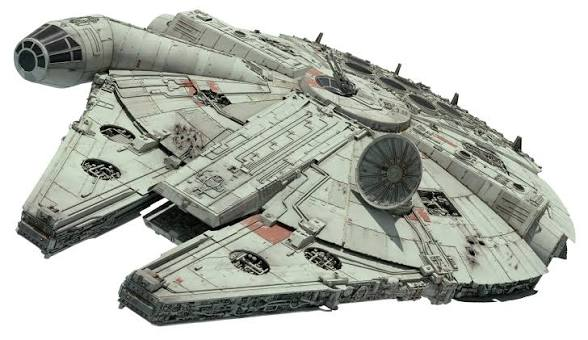
Millennium Falcon
A Millennium Falcon é a icônica nave cargueira modificada de Han Solo e Chewbacca, famosa por sua aparência sucateada e pela velocidade capaz de fazer o percurso de Kessel em menos de doze parsecs
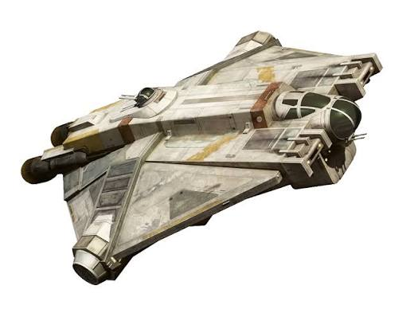
Ghost
A Ghost é um cargueiro leve modificado da classe VCX-100 pilotado por Hera Syndulla, servindo como o lar e a base de operações da célula rebelde dos Espectros. Equipada com sistemas de camuflagem e uma nave auxiliar acoplada chamada Phantom, ela foi fundamental para iniciar a Rebelião em Lothal e sobreviveu às principais batalhas da Guerra Civil Galáctica, incluindo Scarif e Endor.
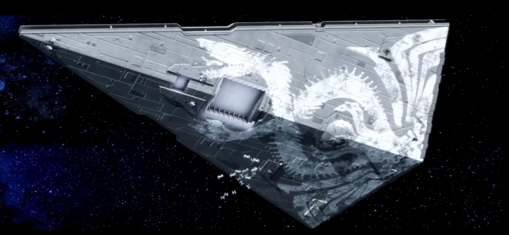
Quimera
A Quimera (Chimaera) é o icônico Destróier Estelar Imperial de classe Imperial I comandado pelo Grão-Almirante Thrawn, facilmente reconhecível pela pintura estilizada de uma criatura mítica em seu casco inferior.
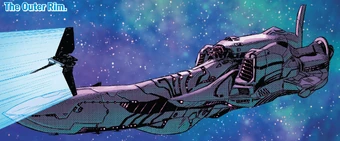
SpringHawk
A Springhawk é o cruzador pesado da Frota de Defesa Expansionária da Ascendência Chiss comandado por Thrawn durante sua juventude no Caos. Equipada com escudos avançados, lanças de plasma e mísseis teleguiados, ela foi o palco das primeiras grandes vitórias táticas de Thrawn
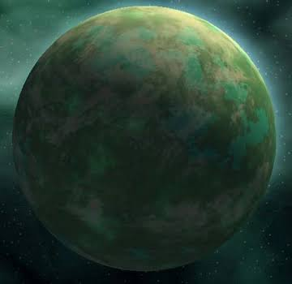
Yavin 4
Lua coberta de selva que gira em volta de um gigante gasoso. Ali havia uma base rebelde, de onde saíram os pilotos para atacar a Estrela da Morte.
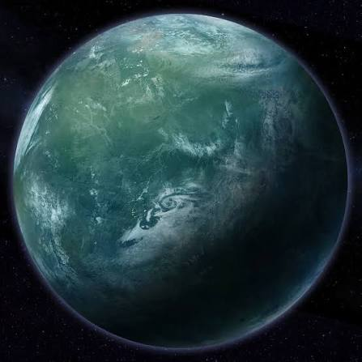
Taris
Taris é um planeta urbano da Orla Exterior que já foi um próspero centro comercial antes de entrar em decadência e ser dividido por uma forte desigualdade social. Durante a Guerra Civil Jedi, sua superfície foi devastada por um bombardeio orbital ordenado por Darth Malak para impedir a fuga de Bastila Shan.
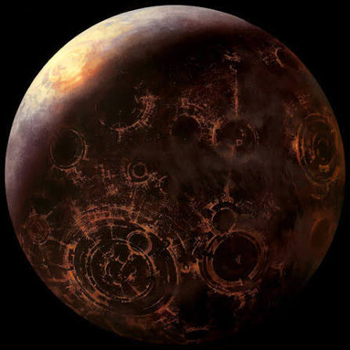
Coruscant
Coruscant é o planeta-cidade localizado no centro da galáxia, servindo como o coração político da República e, mais tarde, do Império Galáctico. Totalmente coberto por arranha-céus que escondem níveis inferiores perigosos, ele também abrigou o grandioso Templo Jedi antes da Ordem 66.
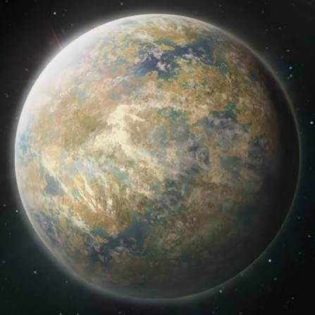
Lothal
Lothal é um planeta agrícola e de vastas planícies da Orla Exterior que foi brutalmente explorado pelo Império Galáctico para a produção de caças TIE. Lar de um antigo Templo Jedi e conectado misticamente aos lobos-loth.
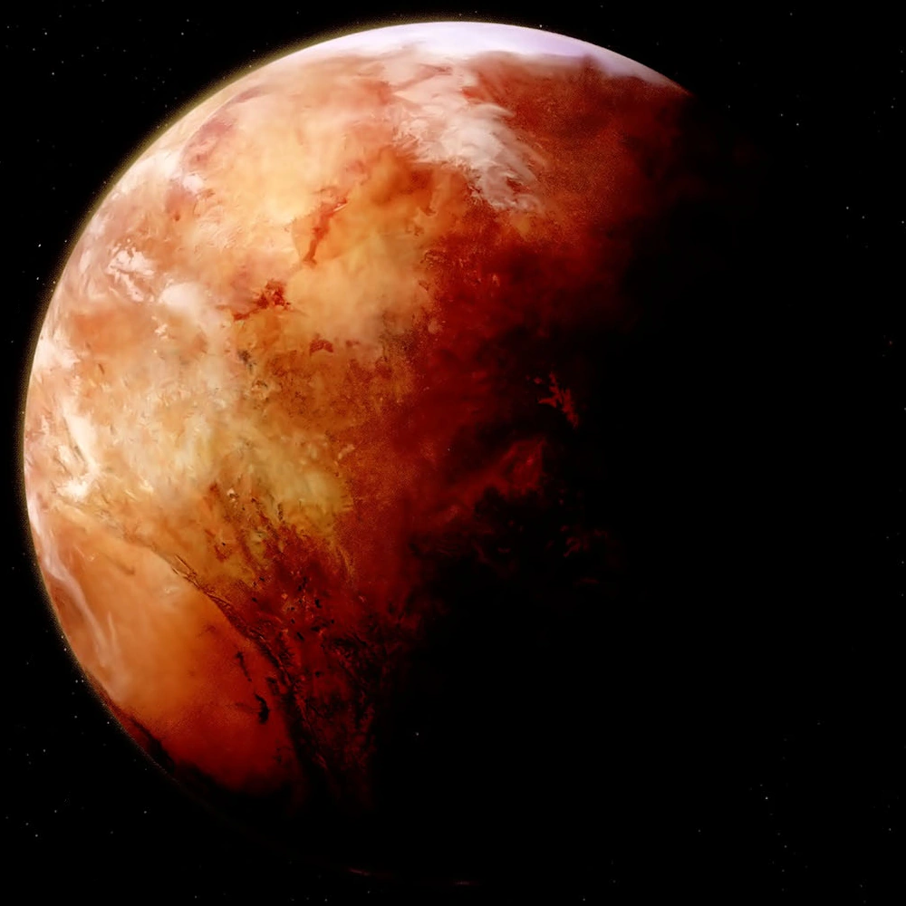
Korriban
Korriban é um planeta desértico e inóspito da Orla Exterior, considerado o berço ancestral da Ordem Sith. Repleto de antigas tumbas e templos sombrios no Vale dos Lordes das Trevas, o mundo emana uma poderosa aura do lado sombrio da Força e serviu por milênios como o local de sepultamento e treinamento dos maiores mestres Sith.